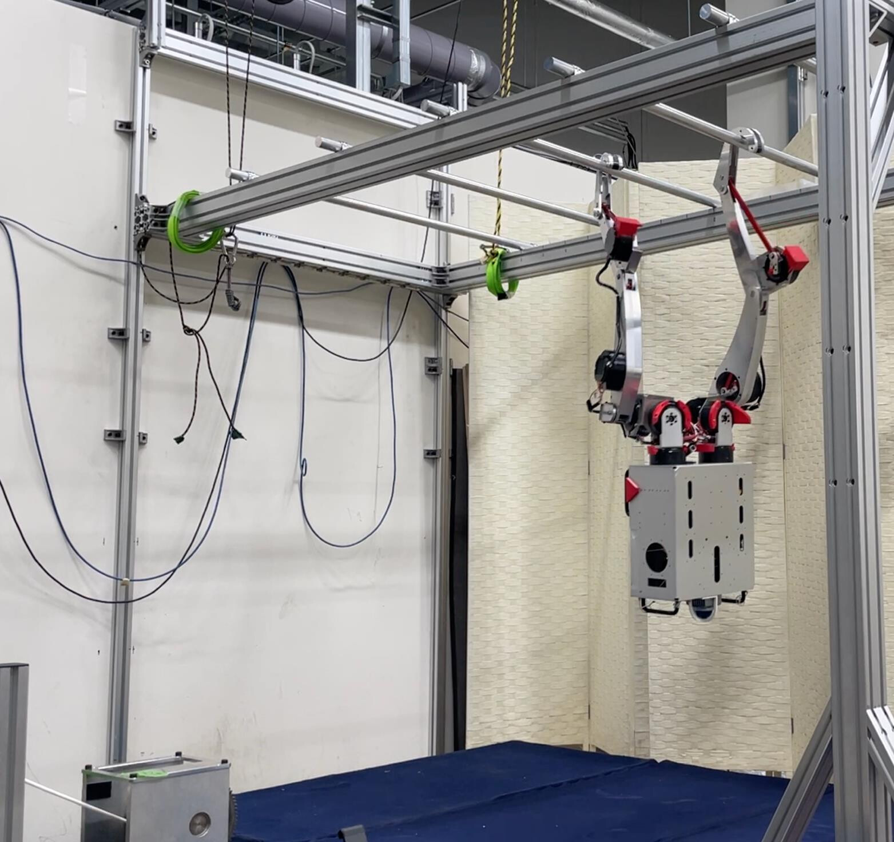
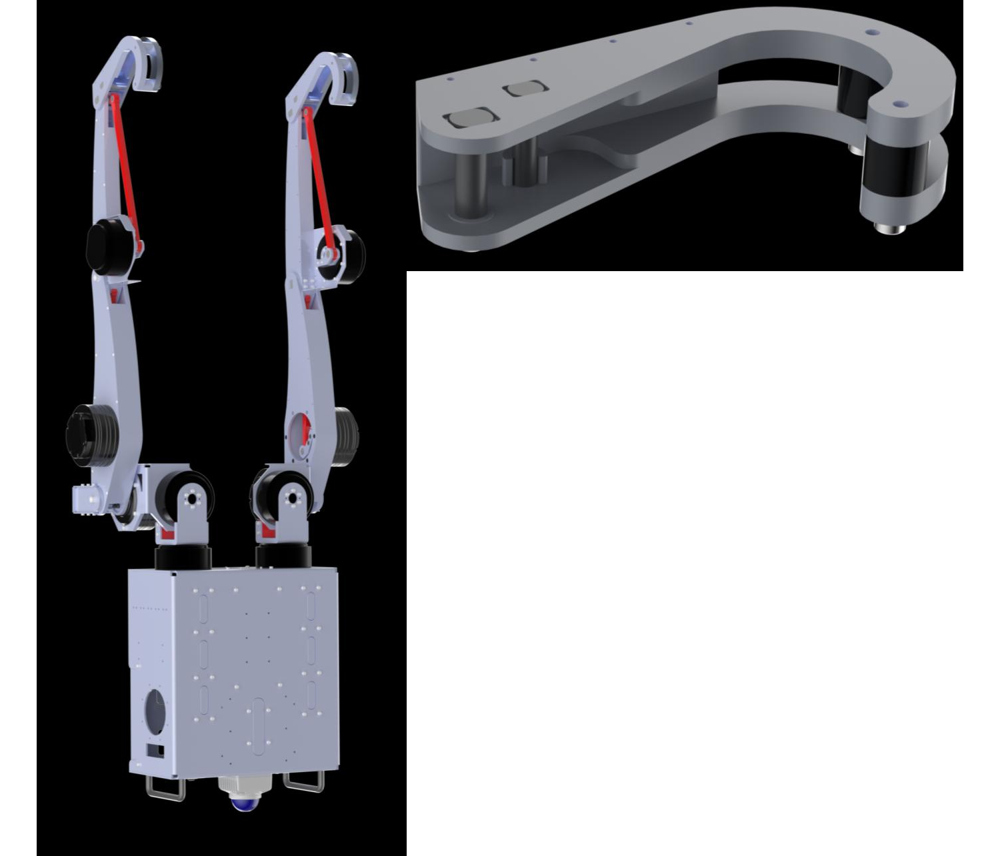
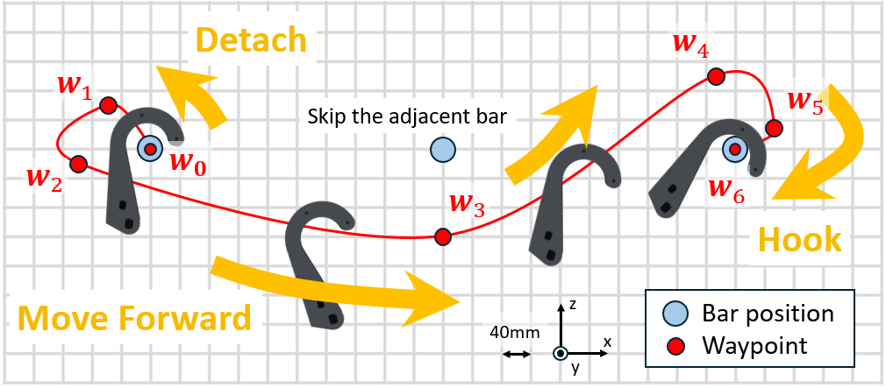
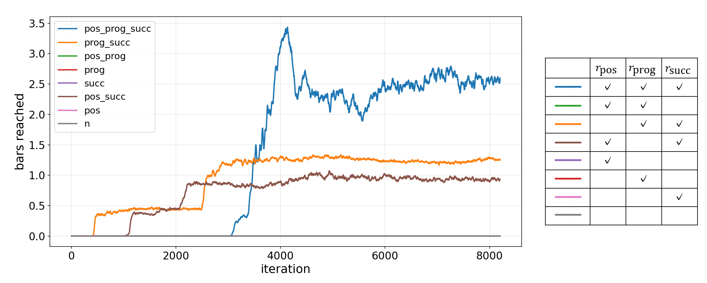
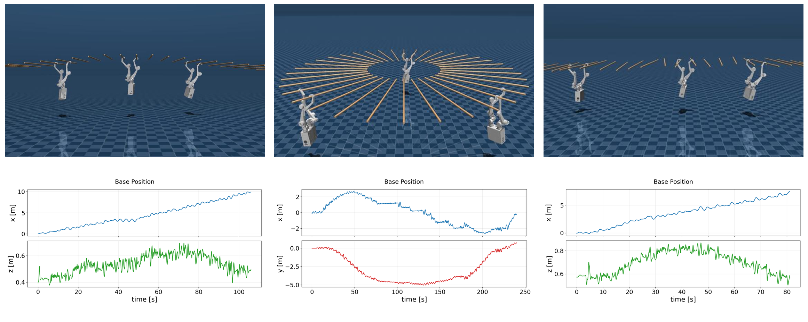
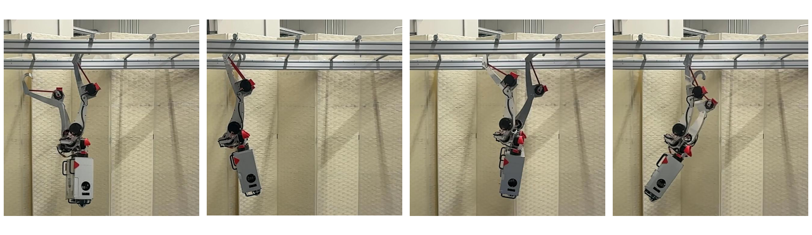
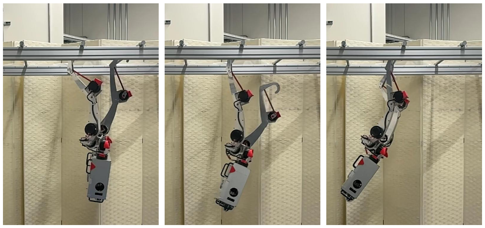

Robust Brachiation on a Life-Sized Dual-Arm Robot Using
Waypoint-Guided Reinforcement Learning
IEEE/RSJ International Conference on Intelligent Robots and Systems (IROS) 2026
 arXiv (TODO)
arXiv (TODO)

Abstract
Brachiation enables locomotion through environments without footholds, but requires coordinated whole-body movement and precise timing for bar grasping and release. This work presents Waypoint-Guided Reinforcement Learning (WGRL), a framework for realizing robust brachiation on a life-sized dual-arm robot. When full-body reference motions for imitation learning are unavailable, WGRL sparsely specifies waypoints for the end-effector trajectory while allowing reinforcement learning to generate the whole-body motion. By combining waypoint guidance with task-success and mechanical-energy rewards, and training in an environment designed for Sim-to-Real transfer, the method achieves both forward progression and motion stability. Sim-to-Sim evaluations under varied monkey-bar geometries and zero-shot hardware experiments demonstrate robust brachiation, including recovery from failed grasps.
Motivation
Reinforcement learning has enabled robust legged locomotion, but locomotion without footholds remains challenging. Brachiation requires discontinuous contact changes, coordinated whole-body motion, and precise grasp-and-release timing. Existing model-based approaches can depend strongly on accurate dynamics, while high-quality reference motions suitable for robot-specific hooks are difficult to obtain. WGRL addresses these challenges by guiding only the task-critical end-effector path with sparse waypoints instead of requiring a complete reference motion.

Waypoint-Guided Reinforcement Learning
WGRL guides the reaching hand through five task-space waypoints: detaching from the current bar, passing beneath the bars, moving forward, rising toward the target, and hooking from above. Its reward combines a position term based on distance and approach direction, a progress term based on the decrease in normalized distance, and a success term that advances the target waypoint. A curriculum gradually enlarges the waypoint thresholds as learning progresses, providing strong guidance early in training while allowing diverse final motions.

Training
The policy is trained with PPO in 4096 parallel Legged Gym environments. The actor uses only observations available on hardware and outputs target joint angles at 50 Hz, while the critic receives privileged simulation information. Observation noise and domain randomization are applied to friction, link masses, centers of mass, and bar geometry. Initial training emphasizes WGRL to acquire the motion, followed by refinement in which bar-reaching success promotes forward motion and mechanical-energy regulation promotes stable suspension.

Sim-to-Sim Results
In MuJoCo, the learned policy traversed more than 30 bars in every trial under the nominal 400 mm spacing. It also maintained forward progression in unseen environments with vertical and yaw perturbations, a 5-degree inclined up-and-down course, and a circular course. Reaching success was 93.3% on the inclined course and 91% on the circular course. When a hook initially missed, the robot often recovered its balance, generated another swing, and retried the grasp.

Hardware Experiment
The simulation-trained policy was transferred to the life-sized robot without additional fine-tuning. In a four-bar hardware course, the robot repeatedly released one hook, swung toward the next bar, grasped it, and stabilized in dual-hand support. Even after hooking failures, an emergent recovery strategy increased the swing amplitude and enabled repeated grasping attempts without falling.


BibTeX
@inproceedings{iwata2026robust,
title={{Robust Brachiation on a Life-Sized Dual-Arm Robot Using Waypoint-Guided Reinforcement Learning}},
author={Ayumu Iwata and Kento Kawaharazuka and Keita Yoneda and Takahiro Hattori and Kei Okada},
booktitle={IEEE/RSJ International Conference on Intelligent Robots and Systems (IROS)},
year={2026},
}
Contact
If you have any questions, please feel free to contact Ayumu Iwata (TODO: contact email).